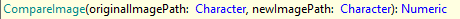

Compares the second image against the first one. Returns the percentage similarity as an integer number, returning 100 if the images are equal. Images must have similar scaling in order for the comparison can be performed.
Parameters
Returns
Example
&driver.Verify(&driver.CompareImage("C:\screenshot1.png","C:\screenshot2.png") > 95, true, "Comparing screenshots")
This command is available since GeneXus 17 upgrade 6.